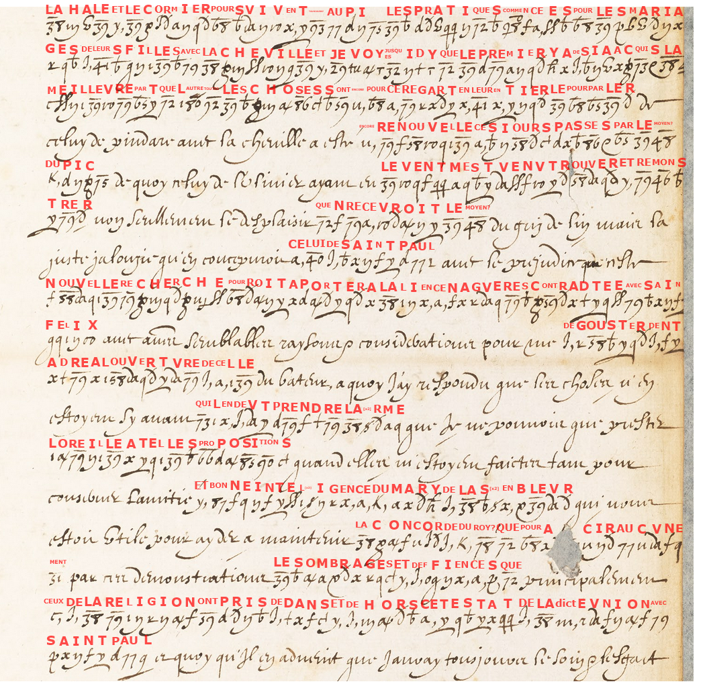
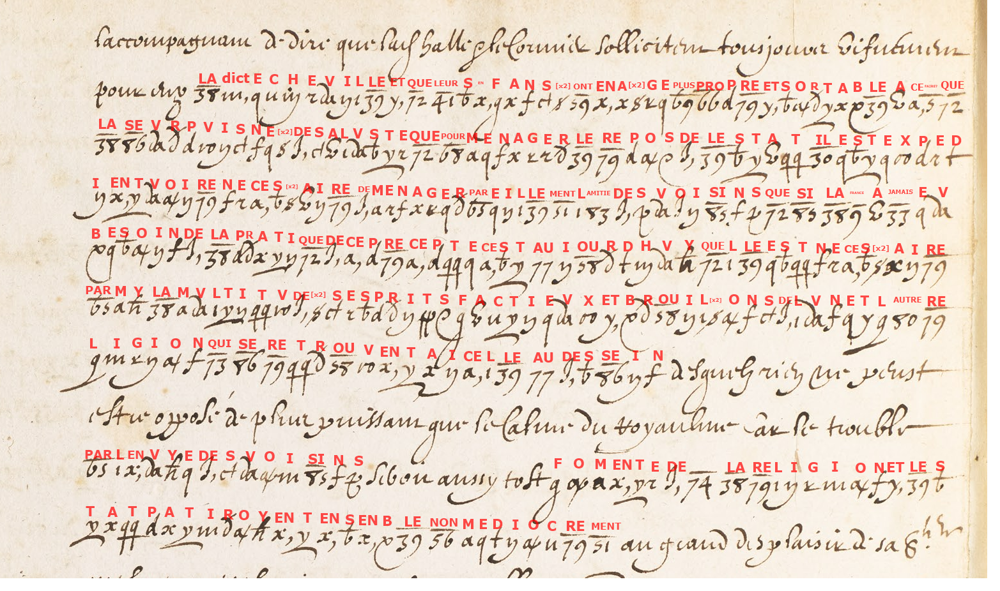
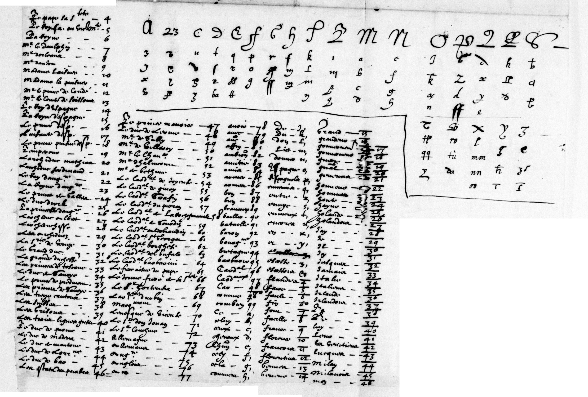
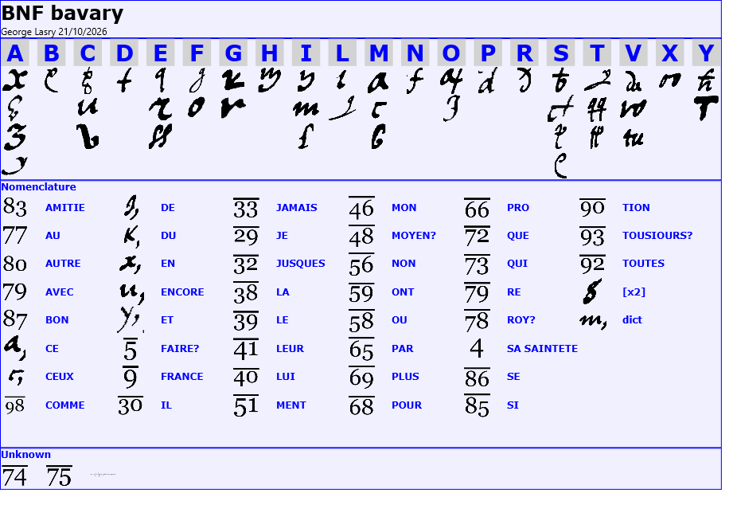
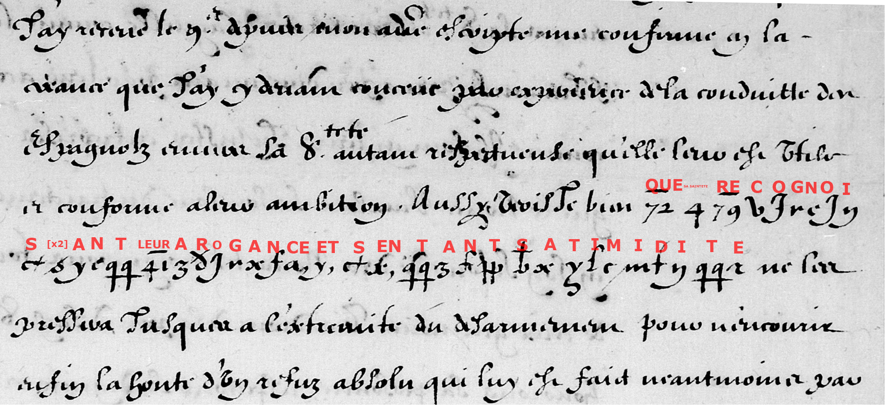

Summary of contents
The longer letter follows rival marriage negotiations and the jealousy they provoke. Its writer explains why he continues to hear competing proposals: keeping several friendships alive may help preserve peace in France. The second excerpt makes the political argument explicit, warning that unrest at home could be encouraged by neighbouring powers and harm both religion and the state.
A shorter letter from Marie de Médicis, dated 10 November 1610, uses the same cipher to express a frank judgment of the pope: recognizing Spanish arrogance but conscious of his own timidity, he is unlikely to insist that the Spaniards disarm.
Historical context
Savary de Brèves was France’s ambassador in Rome when Henri IV was assassinated in May 1610 and Marie de Médicis became regent for the young Louis XIII (Tomokiyo). Her correspondence with Savary brought the French court’s concerns directly to its representative at the papal court.
In the longer letter, marriage is a matter of foreign policy: each proposed union affects other alliances and arouses suspicions within France. The writer’s warning about turbulent spirits of “l’une et l’autre religion” connects diplomacy abroad with the need to keep religious peace at home. Cipher conceals the sensitive negotiations and candid judgments, while ordinary handwriting carries the surrounding discussion.
The larger letter: marriage, alliances and the peace of the kingdom


Texte français
La Hale et le Cormier poursuivent [tousjours?] au Pi[75̄] les pratiques commencées pour les mariages de leurs filles avec la Cheville, et je voy jusques icy que le premier y a desja acquis la meilleure part que l’autre. Toutes les choses sont encore pour ce regard en leur entier. Le pourparler de celuy de Pindare avec la Cheville a esté encore renouvellé ces jours passés par le [moyen?; 48̄] du Pic[75̄], de quoy celuy de [l’Olivier?] ayant eu le vent m’est venu trouver et remonstrer non seullement le desplaisir qu’en recevroit le [moyen?; 48̄] du Gris de Lin, mais la juste jalousie qu’en concevroit celuy de Saint Paul, avec le prejudice que ceste nouvelle recherche pourroit apporter à l’alliance naguères contractée avec Saint Felix, avec autres semblables raysons et considerations pour me desgouster d’entendre à l’ouverture de celle du Bateur, à quoy j’ay respondu que les choses n’en estoyent si avant qu’il en deust prendre l’alarme, que je ne pouvois que prester l’oreille à telles propositions quand elles m’estoyent faictes, tant pour conserver l’amitié et bonne intelligence du mary de l’Assembleur, qui nous estoit utile pour ayder à maintenir la concorde du [Roy?; 78̄], que pour a[dou]cir aucunement par ces demonstrations les ombrages et deffiences que principalement ceux de la religion ont pris dedans et dehors cest estat de la dicte union avec Saint Paul ; et quoy qu’il en advient, que j’auray tousjours le soing et l’effect [suite hors image].
L’accompagnant de dire que la Halle et le Cormier sollicitent tousjours vivement pour eux la dicte Cheville, et que leurs enfans sont en aage plus propre et sortable à ce [faire?] que la sœur puisnée de Saluste ; que pour mesnager le repos de l’estat il est expedient, voire necessaire, de mesnager pareillement l’amitié des voisins ; que si la France a jamais eu besoin de la pratique de ce precepte, c’est aujourd’huy qu’elle est necessaire parmy la multitude des esprits factieux et brouillons de l’une et l’autre religion qui se retrouvent à icelle, au dessein desquels rien ne peust estre opposé de plus puissant que le calme du royaume, car le trouble par l’envie des voisins si bon [aussytost?] fomenté de [74̄], la religion et l’estat patiroyent ensemble non mediocrement, au grand desplaisir de Sa Sainteté. [Suite hors image.]
English translation
La Hale and Le Cormier are [still?] pursuing, with Pi[75̄], the negotiations begun for the marriages of their daughters to La Cheville; and so far I see that the former has already gained the better share over the other. In this respect everything is still undecided. The negotiations concerning the person called Pindare and La Cheville have been renewed in recent days through the [means?; 48̄] of Pic[75̄]. Having got wind of this, the person called [L’Olivier?] came to see me and point out not only the displeasure it would cause the [unresolved 48̄] of Gris de Lin, but also the justified jealousy it would arouse in the person called Saint Paul, and the harm this new proposal might do to the alliance recently contracted with Saint Félix. He added other similar reasons and considerations to dissuade me from listening to the proposal concerning Le Bateur. I replied that matters had not gone so far that he should take alarm, and that I could only lend an ear to such proposals when they were made to me, both to preserve the friendship and good understanding of the husband of L’Assembleur, who was useful to us in helping maintain the concord of the [king?; 78̄], and to soften, to some extent, through these demonstrations, the suspicions and distrust that especially those of the Religion have felt, within and outside this state, concerning the said union with Saint Paul; and whatever comes of it, I shall always take care and act [continuation outside the image].
Adding that La Halle and Le Cormier are still pressing vigorously on their own behalf for the said La Cheville, and that their children are of an age more suitable and fitting for this [marriage?] than Saluste’s younger sister; that to preserve the peace of the state it is expedient, indeed necessary, likewise to cultivate friendship with its neighbours; and that if France has ever needed to put this precept into practice, it is today that it is necessary, amid the multitude of factious and turbulent spirits of both religions found within it. Against their designs nothing can be set that is stronger than the tranquillity of the kingdom; for, if disorder were [the connecting wording is uncertain] fostered by the neighbours’ envy [unresolved 74̄], religion and the state would both suffer considerably, to His Holiness’s great displeasure. [Continuation outside the image.]
How the cipher worked
This is a homophonic cipher: a writer could choose among several signs for the same letter. Other signs represented common letter groups or whole words. The key combined this substitute alphabet with a nomenclator, a list of codes for names, places and expressions.
Small marks changed a sign’s meaning. In the reconstructed key, 79 stands for avec, while an overbar changes 79̄ to re. The number 4 stands for Sa Sainteté, “His Holiness.” A sign could therefore conceal a whole expression rather than a single letter.
A further sign told the reader to repeat the preceding value. It could double a letter, as in aage, or repeat a group of letters. This helped explain signs that did not fit a simple substitution alphabet.
Original key

Reconstructed key

Marie de Médicis to Savary de Brèves, 10 November 1610

Texte français
J’ay receu […] et vostre […] me confirme en la [creance?] que j’ay cy devant conceue par experience de la conduitte des Espagnolz envers Sa Sainteté, autant respectueuse qu’elle leur est utile et conforme à leur ambition. Aussy vois-je bien que Sa Sainteté, recognoissant leur arogance et sentant sa timidité, ne les pressera jusques à l’extremité du desarmement pour recevoir enfin la honte d’un refus absolu, qui luy est faict neantmoins par [suite hors image].
English translation
I have received […] and your […] confirms me in the— [belief?] that I previously formed from experience of the conduct of the Spaniards towards His Holiness, which is as respectful as it is useful to them and consonant with their ambition. I also clearly see that His Holiness, recognizing their arrogance and sensing his own timidity, will not press them to the utmost over disarmament, only to receive in the end the humiliation of an outright refusal, which is nevertheless conveyed to him by [continuation outside the image].